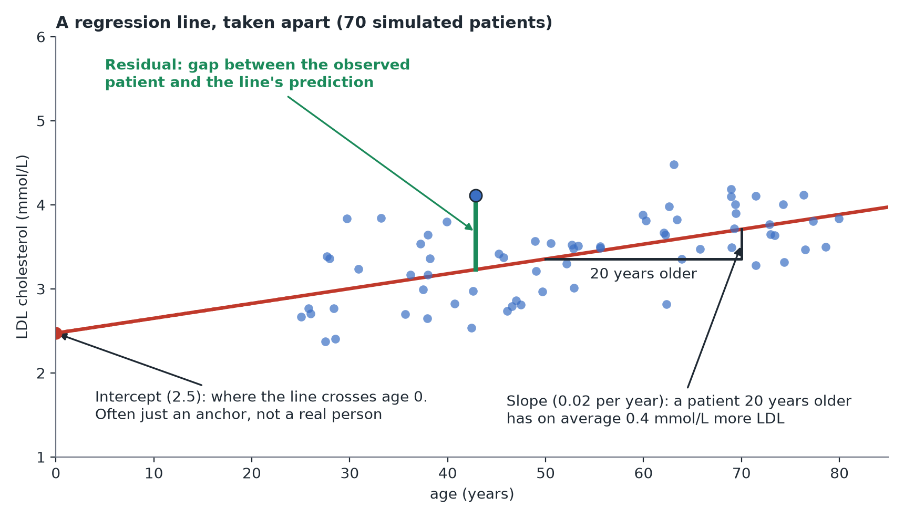

What Is Regression?
In plain terms: regression fits the "best" line (or curve) through your data, describing how one variable tends to change as another changes.
The simplest case
Plot age (x-axis) against LDL cholesterol (y-axis) for Mia's 300 patients. Regression finds the straight line that best fits the cloud of points — described by two numbers: where the line crosses zero (the intercept) and how steeply it rises or falls (the slope, or coefficient). "LDL rises by 0.02 mmol/L for every extra year of age" is a slope, in plain English.

Why it's more than "just a line"
Regression is not limited to one predictor. You can add carrier status, sex, and age into the same model, and each coefficient then tells you "the effect of this variable, holding the others fixed." This is more informative than a single two-group comparison — it separates "carrying the variant raised LDL" from "carriers in this sample happened to be older."
Key vocabulary
- Outcome / dependent variable: the thing you're trying to explain or predict (LDL cholesterol).
- Predictor(s) / independent variable(s): the things you think might explain it (carrier status, age).
- Coefficient: how much the outcome changes per unit change in a predictor, holding the others fixed.
- Residual: the gap between what the model predicted for a data point and what was observed. Good models have small, patternless residuals.
Why this skill leans on regression so heavily
Regression reproduces t-tests, ANOVA, and chi-squared tests exactly (see Tests as regressions), extends naturally to yes/no or count outcomes (see GLMs), and is the standard tool for both prediction and causal-effect estimation (Module 5). The same framework covers most of the material in this course.